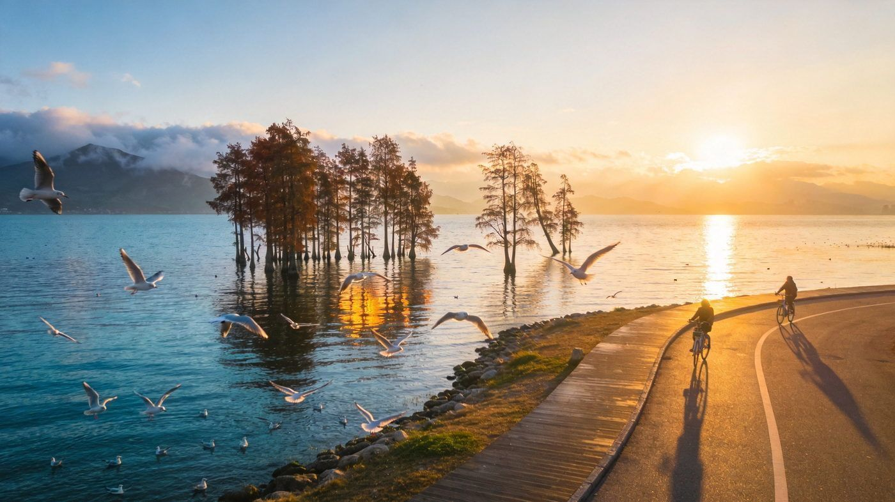
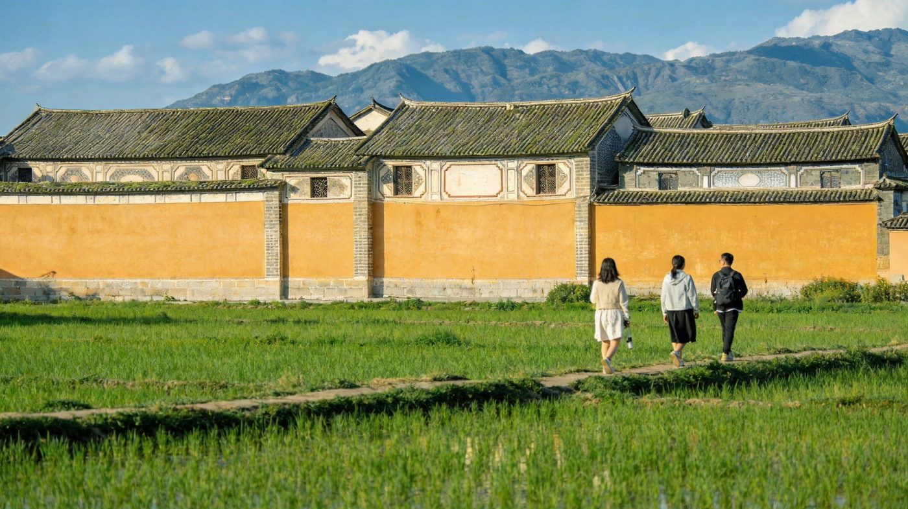
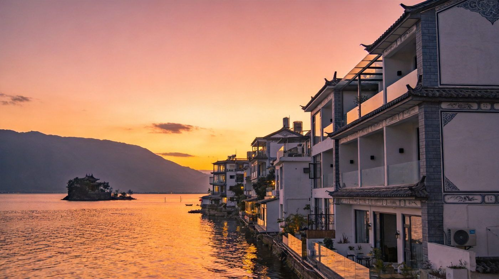
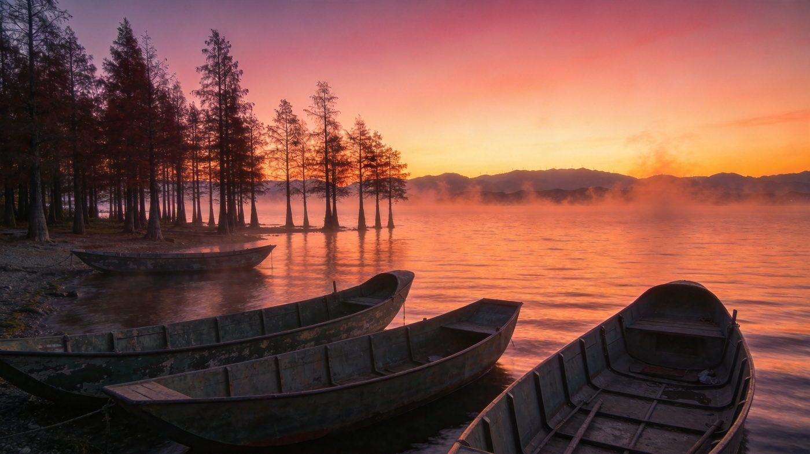
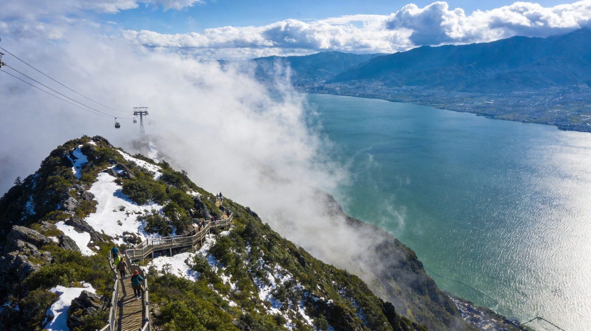

🌊 大理 · 洱海 Dali & Erhai Guide
大理洱海三版休闲指南
风花雪月的慢旅行之城，环洱海 130 公里生态廊道 + 白族古镇与苍山相映。核心看点：洱海骑行、喜洲古镇、双廊、龙龛日出、苍山索道。想轻松打卡走 2 天版，深度体验走 5 天版，旅居放松走 10 天版。适合 1–3 人，含行程 / 住宿 / 美食 / 预算 / 出行方式对比。
📍 大理白族自治州（云南）👥 1–3 人⏱️ 2 / 5 / 10 天三方案💰 人均预算已附
☕2 天轻松 · 打卡版
核心策略：D1 古城慢逛+苍山三塔，D2 环洱海精华骑行+喜洲，轻松不赶路。
👥 1–3 人适配：2 天节奏轻松，租电动车/自行车游洱海西岸最惬意；预算按 人均 标注。
🗺️ 行程安排
DAY 1 · 大理古城 + 苍山三塔
🚄 高铁/飞机抵达大理🏘️ 下午 逛大理古城（复兴路/人民路）
🏯 崇圣寺三塔（约75元，看倒影）🍜 古城人民路吃白族菜
💡 古城免费进入，夜晚人民路民谣酒吧很有氛围；三塔景区建议傍晚去看落日倒映池塘，出片一流。
DAY 2 · 洱海西岸精华骑行
🌅 清晨 龙龛码头日出🚴 生态廊道骑行（龙龛→才村→喜洲约20km）
🌾 喜洲古镇 逛稻田+扎染🥧 现烤喜洲粑粑 返程
⚠️ 生态廊道禁机动车只能骑行/步行，租自行车约20-30元/天；日出6:30-7:00，提前占位。喜洲粑粑凉了口感差，要买现烤的。
🏡 住宿建议
经济古城青旅/客栈
约 80–150 元/晚
交通便利、夜市热闹，适合背包客与省钱党。
舒适古城庭院民宿
约 200–400 元/晚
白族四合院改造，闹中取静，性价比高。
海景才村/龙龛海景民宿
约 400–800 元/晚
推窗见洱海日出，旺季需提前订。
🌸5 天沉浸 · 深度版
逆时针环洱海不回头，海西看日出、海东追日落，穿插苍山徒步，每天一个主题不赶路。
👥 逆时针环湖：海西住才村/喜洲（看日出），海东住挖色/双廊（看日落），日均消费约 300–500 元/人。
🗺️ 行程安排
DAY 1 · 抵达 + 环海西骑行
🚄 抵达 入住海西才村/龙龛🚴 生态廊道骑行（才村→崇邑→龙龛）
☕ 洱海边咖啡馆发呆 🌅 傍晚看日落
💡 海西段（才村至喜洲约20km）最适合骑行；第一天先适应海拔（约1970m），别安排太满。
DAY 2 · 苍山徒步 + 寂照庵
🚡 感通索道上苍山（往返约80-110元）🥾 玉带路徒步 俯瞰洱海
🏯 崇圣寺三塔 或 寂照庵素斋（20元）
⚠️ 苍山索道旺季排队1-2小时，建议早8点前到或下午3点后错峰；玉带路平缓无爬升，约3小时。紫外线极强，SPF50+防晒必带。
DAY 3 · 海东环游 · 双廊日落
🚗 自驾/包车 海东环湖（理想邦→鹿卧山）🏝️ 挖色小普陀 喂红嘴鸥
🌇 双廊玉几岛 看苍山日落 🏨 宿双廊海景房
💡 海东线约80km、公路贴崖视野开阔，最适合自驾；双廊日落约18:30-19:00，提前占位。玉几岛太阳宫需提前预约。
DAY 4 · 喜洲 + 周城扎染
🌾 喜洲古镇 逛稻田+转角楼+喜林苑🎨 周城村 白族扎染体验（约50元）
🥪 喜洲粑粑 破酥粑粑
💡 喜洲稻田季节性强，7-10月最绿、12-2月是油菜花，根据出行调整期待；扎染自己动手能带走作品。
DAY 5 · 松弛收尾 + 返程
😴 睡到自然醒🍜 北门菜市场吃饵丝/烤饵块
🛍️ 采购乳扇/鲜花饼 伴手礼 🚄 返程
💡 大理的美在于慢下来：最后一天不赶景点，逛菜市场、喝杯云南小粒咖啡，再带走当地方物。
🌿10 天旅居 · 慢生活版
在大理深度旅居：环洱海慢游 + 苍山秘境 + 沙溪/巍山古镇，穿插发呆、扎染与古镇烟火，节奏极致松弛。
👥 10 天适合旅居：可分段住宿，环湖时住海景、后面住古城庭院，日均消费约 320–600 元/人（含吃住行）。
🗺️ 行程安排
DAY 1 · 抵达 慢适应
🚄 抵达 入住古城/才村🏘️ 傍晚逛大理古城（复兴路/洋人街）
🍜 人民路 听民谣 吃白族菜
💡 前3天海西看日出、环湖骑行、爬苍山；后7天古镇慢居。先适应海拔，别急着跑景点。
DAY 2 · 洱海西岸骑行
🌅 龙龛码头日出🚴 生态廊道 龙龛→才村→喜洲（约20km）
🌾 喜洲稻田 海舌公园日落
💡 生态廊道禁机动车，分段骑行更舒服；路上海舌公园人少清幽，适合散步看日落。
DAY 3 · 苍山秘境
🚡 洗马潭/感通索道上苍山🥾 玉带云游路 七龙女池 中和寺
🌄 寂照庵素斋 + 多肉庭院
⚠️ 苍山索道旺季排队长，早8点前到；山顶温差大、备防风外套。徒步约4小时，氧气和防晒必带。
DAY 4 · 海东环游
🚗 包车/自驾 海东：理想邦→文笔村→鹿卧山🏝️ 挖色小普陀 喂海鸥
🌇 夜宿双廊海景房 看苍山日落
💡 海东线约80km，建议下午光线最佳时顺时针看景；文笔村彩虹公路半山观景台俯瞰洱海全景。
DAY 5 · 双廊慢生活
🏝️ 玉几岛（太阳宫需预约）南诏风情岛☕ 临海咖啡馆看洱海发呆
🐟 双廊渔家 吃黄焖鸡/酸辣鱼
💡 双廊是"洱海风光第一镇"，住一天海景房值得；太阳宫参观需提前一周预约。
DAY 6 · 沙溪古镇（茶马古道）
🚌 大理→沙溪（拼车约2小时）🏘️ 寺登街 · 玉津桥 · 古戏台 · 先锋书局
🏨 宿沙溪 感受古镇晨雾
💡 沙溪是茶马古道唯一幸存古集市，《去有风的地方》取景地；周一到周五人少，周末人多，建议避开周六日。
DAY 7 · 巍山古城
🚗 沙溪→巍山🏘️ 巍山古城·600多座明清古建 · 巍宝山
🍜 巍山𤆵肉饵丝
💡 巍山是纯净的明清古建宝藏地，比大理古城安静得多；巍宝山道教名山徒步强度适中，安排1天。
DAY 8 · 扎染 + 凤阳邑
🎨 周城扎染 亲手染布🏘️ 凤阳邑村（《去有风的地方》取景地）
☕ 文笔村/磻溪S湾 咖啡时光
💡 凤阳邑距古城8km、打车20分钟；磻溪S湾上午9点前人少光线佳。
DAY 9 · 自由发呆日
😴 睡到自然醒🍜 北门菜市场 地道早餐
🛍️ 古城采购 卤味/鲜花饼/乳扇
💡 大理适合"浪费"时间：找家咖啡馆、古城骑电动车逛穿街走巷，或去崇圣寺三塔看场落日。
DAY 10 · 洱海日出 收尾返程
🌅 最后再看一次洱海日出🚄 返程
💡 预留返程；若航班/高铁晚可去挖色或磻溪补拍S湾，轻松为旅程画上句号。
🏞️必去特色景点
大理的灵魂在洱海与古镇之间，五个招牌点值得为它们安排时间。

配图：原创生成 · 无版权风险
洱海 · 生态廊道骑行
免费
环洱海约130公里的生态滨湖慢行廊道，全天免费开放，不允许机动车驶入，只能骑行或步行。左手苍山、右手洱海，沿途才村、喜洲、崇邑村等均设出入口，是体验大理"慢"的最佳方式。
🎫 门票：免费 🚴 租车：自行车约20-30元/人天、电动约60-80元
数据来源：大理官方文旅 · 2026年实测攻略

配图：原创生成 · 无版权风险
喜洲古镇 · 白族田园
人文
保存超百座"三坊一照壁"白族民居，转角楼、喜林苑黄墙与稻田相映。稻田季节性强：7-10月最绿、12-2月是油菜花。离这很近的周城村是白族扎染之乡，可亲手体验。
🎫 古镇免费 🎨 扎染：约50元/人 🥪 喜洲粑粑：5-10元现烤
数据来源：大理文旅 · 实测推荐

配图：原创生成 · 无版权风险
双廊古镇 · 洱海风光第一镇
海景
紧邻洱海远眺苍山十九峰，玉几岛有杨丽萍的太阳宫、月亮宫，南诏风情岛可乘船前往。临海咖啡馆看日落绝佳，是"躺看海景+日出日落"的首选地。
💡 太阳宫参观需提前预约 🌇 最佳日落时段约18:30-19:00
数据来源：大理文旅 · 实测推荐

配图：原创生成 · 无版权风险
龙龛码头 · 洱海日出TOP1
免费
洱海看日出的绝佳点，冬季红嘴鸥盘旋，水杉林倒映金色湖面。晨雾中随手一拍都是壁纸。一定早起赶在清晨6:30-7:30抵达，是第一天的惊喜开场。
🎫 免费 🌅 日出建议6:30前到 🕊️ 冬季可配搭红嘴鸥
数据来源：大理文旅 · 实测推荐

配图：原创生成 · 无版权风险
苍山 · 索道与玉带路
自然
"风花雪月"中的苍山雪就指这里。乘索道上到半山，走平缓的玉带云游路俯瞰洱海全景，沿途可见野生菌与松鼠。多条索道可选，最轻松的是感通索道。
🎫 苍山地段约40元+ 🚡 感通索道往返约80-110元 🥾 玉带路徒步约3小时
数据来源：大理本地宝 · 苍山景区
🚗出行方式对比·怎么选
环洱海是核心，不同方式是不同体验；按人数和体力选。
| 方式 | 价格参考 | 适合场景 | 一句话建议 |
|---|
| 环洱海 & 市区 |
| 🚴 自行车/步行 | 自行车约20-30元/天 | 生态廊道骑行 | 最佳方式，慢行看景首选 |
| 🛵 电动自行车 | 约60-80元/天 | 古城周边、廊道外公路 | 省体力，但生态廊道内禁入 |
| 🚗 租车自驾 | 轿车/SUV约200-500元/天 | 海东环湖、去沙溪/巍山 | 旺季提前3天约，环湖最自由 |
| 🚌 公交 | 约8-15元/趟 | 古城→喜洲、古城→车站 | 便宜但收班早，晚7点后少 |
| 去周边（沙溪/巍山） |
| 🚐 拼车/包车 | 拼车约50元/人、包车约300元/天 | 沙溪、机场/高铁接驳 | 平台下单更安全，确认一口价 |
👥 团队建议：2-3人环洱海自驾或包车最划算；1人骑行+公交最经济；带老人小孩选包车免暴晒。
🏡住宿怎么选
按活动区域分段住，才能日出日落都兼顾。
经济大理古城
约100-250元/晚
交通枢纽、夜市热闹，民宿选择多；吃东西方便。
田园喜洲/才村
约200-450元/晚
看日出，稻田景观，比古城更原生态，性价比高。
海景双廊/挖色
约400-800元/晚
一线海景看日落，雪山湖景，适合住1-2晚。
旅居沙溪/巍山
约150-350元/晚
古镇静谧、茶马古道遗风，适合慢居与发呆。
💡 分段住宿策略：海西住才村/喜洲看日出，海东住挖色/双廊看日落；旺季提前1个月订，双廊房价会翻倍。
🍜必吃清单
大理菜偏酸辣，不喜辣记得说"少辣"。
4饵丝 / 饵块 / 米线北门菜市场地道早餐 · 人均10元
8-15元
5菌子火锅 / 铜瓢牛肉野生菌汤鲜 · 双廊老李家实惠
80-150元
6鲜花饼 / 云南小粒咖啡伴手礼首选 · 古城咖啡馆必尝
3-40元
💰预算参考（人均）
按中等消费估算，丰俭由人，不含大交通。
| 项目 | 2天打卡 | 5天深度 | 10天旅居 |
|---|
| 住宿（每晚约150-500元按3-7档） | 约300-800 | 约750-2000 | 约1500-4000 |
|---|
| 餐饮（日均约60-120元） | 约120-240 | 约300-600 | 约600-1200 |
|---|
| 市内交通/门票/租车 | 约150-260 | 约400-800 | 约700-1200 |
|---|
| 合计（人均，不含大交通） | 约 800-1300 | 约 1800-3200 | 约 3200-6000 |
|---|
💡 省钱建议：吃去北门菜市场、住喜洲青旅+分段住、环湖骑行代替包车，10天可压到3000元内。
⚠️避坑提示
- 防晒是铁律：大理海拔约1970米，紫外线强到离谱，SPF50+随身补涂，帽子+冰袖物理防晒更靠谱，z防晒不到位容易晒脱皮。
- 生态廊道禁机动车：海西廊道内只能骑行/步行，别自驾进去，在才村、喜洲外租车。
- 别去景区买银饰：古城小巷砍价能省一半；网红S湾人多其实才村日出更绝。
- 规避人潮：避开国庆/五一/暑假高峰，3-5月油菜花、9-11月秋高气爽最舒服；喜洲稻田按季节调整期待。
- 索道错峰：苍山索道旺季排队1-2小时，早8点前到或下午3点后错峰；双廊太阳宫提前一周预约。
- 交通防线：古城夜间打车难，步行出城再叫车；去沙溪提前定拼车，平台下单防被宰。